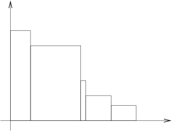

Olimpiadi Italiane di Informatica 2003
La scala (scala)
Il problema
Un gradino è un rettangolo che giace sul piano cartesiano, i
cui lati sono paralleli ai due assi. Una scala è una sequenza di
gradini con le seguenti proprietà:
- i lati inferiori di tutti i gradini giacciono sull'asse X;
- il lato sinistro del primo gradino giace sull'asse Y;
- il lato sinistro di ogni gradino successivo al primo giace
sul lato destro del gradino precedente;
- le altezze dei gradini sono strettamente decrescenti.
La figura 1 mostra una scala.

Figura 1.
Supponete di avere un insieme di punti sul piano cartesiano le cui
coordinate sono numeri interi positivi. Il vostro obiettivo è di
trovare una scala tale che tutti i punti dell'insieme giacciano
nell'area sottesa alla scala (oppure, sul bordo della scala stessa).
Fra tutte le scale possibili, volete sceglierne una che minimizzi
l'area sottesa.
Dati in input
Il programma legge dati da un file di nome input.txt.
Sulla prima riga del file è indicato un singolo numero intero
N che è il numero di punti.
Su ciascuna delle successive N righe è indicato un punto,
espresso attraverso le sue coordinate (due numeri interi separati da
uno spazio).
Dati in output
Il programma deve produrre un file di nome output.txt.
Questo file sarà costituito da una singola riga, contenente un singolo
numero intero, che rappresenta l'area minima possibile di una scala che
contenga tutti i punti.
Assunzioni
- Il tempo limite di esecuzione è fissato in 0,1 secondi.
- 1 ≤ N ≤ 10 000.
Esempio
File input.txt
Supponete che il file input.txt abbia il seguente
contenuto:
11
3 13
6 4
16 3
6 8
9 2
10 11
12 7
7 13
20 5
1 7
22 1
La figura 2 mostra i punti e una scala di area minima che li
contiene tutti.

Figura 2.
File output.txt
Dalla figura l'area sottesa misura
7×13+3×11+2×7+8×5+2×1=91+33+14+40+2=180,
e quindi il file output.txt alla fine sarà il seguente:
180